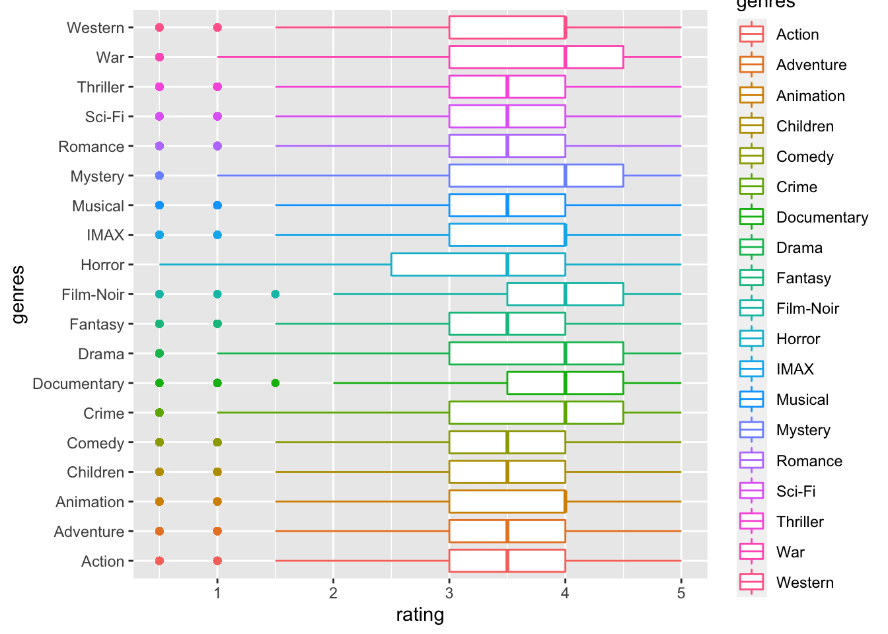
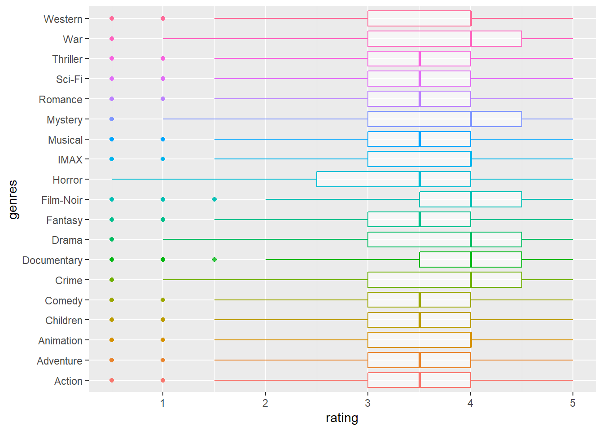

EDA
Yuxuan Wang
11/23/2021
Overview of data sets
- Dataset source used for EDA analysis: MoiveLens dataset
- Here, we decided to use “Small” dataset, which includes 100,000 ratings and 3,600 tag applications applied to 9,000 movies by 600 users(Last updated 9/2018).
- Dataset “links.csv” has 3 variables, including movieId(movie ID),imdbId(IMDb ID) and tmdbId(TMDB ID).
- “movies.csv” is a dataset which includes movieId(movie ID), title(movie title) and genres(movie genres).
- In “ratings.csv” dataset, there are 4 variables. userId represent the user ID, movieId represent movie ID, rating represent the ratings of movies, and timestamp represent a digital record of the time of occurrence of a particular movie. Last but not the least, rating represent the ratings of movies.
- Dataset “tag.csv” has 4 variables, including userId(user ID),movieId(movie ID),tag(tag of movies) and timestamp(digital record of the time of occurrence of a particular movie) -In our Exploratory Analyses, we mainly focus on the following datasets :“ratings.csv”,“movies.csv” and “tag.csv”.
Summary of the used packages and dependencies
Import dependencies
knitr::opts_chunk$set(echo = TRUE)
library(tidyverse)
library(readr)
library(ggplot2)
library(kableExtra)
library(pastecs)Overview of dataset “ratings.csv”
Import dataset
data_path = "./data/small/ratings.csv"Descriptive statistics（brief descriptive coefficients that summarize dataset “ratings.csv”）
rating_descriptive =
read_csv(data_path, col_types = "ccnc") %>%
janitor::clean_names() %>%
select(rating) %>%
stat.desc() %>%
knitr::kable() %>%
kable_styling(bootstrap_options = c("striped"))
rating_descriptive | rating | |
|---|---|
| nbr.val | 1.008360e+05 |
| nbr.null | 0.000000e+00 |
| nbr.na | 0.000000e+00 |
| min | 5.000000e-01 |
| max | 5.000000e+00 |
| range | 4.500000e+00 |
| sum | 3.530830e+05 |
| median | 3.500000e+00 |
| mean | 3.501557e+00 |
| SE.mean | 3.283100e-03 |
| CI.mean.0.95 | 6.434800e-03 |
| var | 1.086867e+00 |
| std.dev | 1.042529e+00 |
| coef.var | 2.977330e-01 |
- Here, we applied the “stat.desc()” function tobriefly describe the variable “rating”.
- According to the result,
- median is 3.5
- mean is 3.501557
- standard error on the mean (SE.mean) is 3.283100
- confidence interval of the mean (CI.mean) at the p level (default is 0.95)
- variance (var)
- standard deviation (std.dev)
- the variation coefficient (coef.var) defined as the standard deviation divided by the mean
Since userid ,movieid,timestamp only represent the ID of users, id of movies respectively,and digital record of the time of occurrence of a particular movie,we do not analysis those three variables
Find popular movies and high-rating movies
Data preparation
data_path = "./data/small/ratings.csv"
rating_tidy =
read_csv(data_path, col_types = "ccnc") %>%
janitor::clean_names() %>%
select(-timestamp) %>%
mutate(rating = as.double(rating))
high_rating =
rating_tidy %>%
filter(rating == 5.0)
movie_names =
read_csv("./data/small/movies.csv") %>%
rename(movie_id = movieId)Test
high_rating_movienames =
merge(high_rating, movie_names) %>%
group_by(title, genres,rating) %>%
count(movie_id) %>%
filter(n >= 100) %>%
select(n,title,genres,rating) %>%
ungroup(title, genres,rating) %>%
arrange(n) %>%
knitr::kable() %>%
kable_styling(bootstrap_options = c("striped"))
high_rating_movienames | n | title | genres | rating |
|---|---|---|---|
| 104 | Star Wars: Episode IV - A New Hope (1977) | Action|Adventure|Sci-Fi | 5 |
| 109 | Matrix, The (1999) | Action|Sci-Fi|Thriller | 5 |
| 116 | Forrest Gump (1994) | Comedy|Drama|Romance|War | 5 |
| 123 | Pulp Fiction (1994) | Comedy|Crime|Drama|Thriller | 5 |
| 153 | Shawshank Redemption, The (1994) | Crime|Drama | 5 |
Find popular movies and high-rating movies : In order to find the top 5 popular movies with highest rating, we filtered movies with rating less than 5, and count the 5 most rated movies. The Shawshank Redemption (1994) is the most popular movie, which has 153 times user rating. No.2 Pulp Fiction (1994), has 123 times user rating. 116 times user rating, Forrest Gump (1994) wins the 3rd popular place. The Matrix (1999) has 109 times user rating,and is the fourth place among the top 5 popular movies. No. 5 is Star Wars: Episode IV - A New Hope (1977), and it has 104 times user rating. We also find out that among those 5 most rated movies and highest rating movies, genres with tag drama appears the most(3 times, appear in Forrest Gump (1994), Pulp Fiction (1994),The Shawshank Redemption (1994)). We also find out one interesting fact is that among the 5 most popular movies and 5 highest rating movies, 3 movies are released in 1994; 4 movies are released in the 90s.
Boxplot regarding ratings and genres
movie_names =
read_csv("./data/small/movies.csv") %>%
rename(movie_id = movieId) %>%
separate(
title, c("name", "year"), sep="\\s+(?=\\S*$)")
filter_ratingscore =
rating_tidy
boxplot_df =
merge(filter_ratingscore, movie_names) %>%
janitor::clean_names() %>%
separate_rows(genres, sep = "[|]") %>%
filter(!genres %in% "(no genres listed)") %>%
ggplot(aes(x = rating, y = genres)) + geom_boxplot(aes(color = genres))
boxplot_df 
Boxplot regarding: ratings and years
movie_names =
read_csv("./data/small/movies.csv") %>%
rename(movie_id = movieId) %>%
separate(
title, c("name", "year"), sep="\\s+(?=\\S*$)")
boxplot_df2 =
merge(filter_ratingscore, movie_names) %>%
head(1000) %>%
ggplot(aes(x = rating, y = year)) + geom_boxplot(aes(color = year))+
viridis::scale_fill_viridis(discrete = TRUE)
boxplot_df2 
Boxplot regarding ratings and genres, (genre split)
tags = read_csv("./data/small/tags.csv")
tags.user =
tags %>%
janitor::clean_names() %>%
mutate(
tag = strsplit(tag, " ")
) %>%
select(user_id, movie_id, tag) %>%
nest(data = tag)
tags.movie =
tags %>%
janitor::clean_names() %>%
mutate(
tag = strsplit(tag, " ")
) %>%
select(user_id, movie_id, tag) %>%
nest(data = c(user_id,tag))
tags.full =
tags %>%
janitor::clean_names() %>%
mutate(
tag = strsplit(tag, " ")
) %>%
unnest()
tag_review =
merge(tags.full , movie_names) %>%
select(-timestamp, -genres) %>%
head(5) %>%
knitr::kable() %>%
kable_styling(bootstrap_options = c("striped"))Boxplot regarding split genre and rating, see if there is trend
tag_review_plot =
merge(tags.full ,filter_ratingscore) %>%
head(30) %>%
ggplot(aes(x = rating, y = tag)) + geom_boxplot(aes(color = tag))+
viridis::scale_fill_viridis(discrete = TRUE)
tag_review_plot
Find the average rating of each categories in different year
movie_names =
read_csv("./data/small/movies.csv") %>%
rename(movie_id = movieId) %>%
separate(
title, c("name", "year"), sep="\\s+(?=\\S*$)")
ave_rating =
merge(filter_ratingscore, movie_names) %>%
group_by(year,genres) %>%
summarize(mu_rating = mean(rating)) %>%
head(10) %>%
knitr::kable() %>%
kable_styling(bootstrap_options = c("striped"))
ave_rating| year | genres | mu_rating |
|---|---|---|
|
|
Action|Adventure|Fantasy|Sci-Fi | 3.50 |
|
|
Crime|Western | 2.50 |
|
|
Animation|Comedy|Sci-Fi | 4.00 |
|
|
Drama|War | 2.00 |
|
|
Action|Adventure|Sci-Fi | 3.75 |
|
|
Comedy | 3.50 |
|
|
Drama | 3.50 |
|
|
Fantasy|Romance | 3.50 |
|
|
Comedy | 4.50 |
|
|
Comedy|Drama | 2.00 |
Kruskal Test regarding user_id and rating
Assumption: \(H_0:\mu_{0}=\mu_1=\mu_2=\mu_3=...=\mu _x\) \(H_1: At\ least\ two\ of\ the\ mean\ ratings\ of\ the\ users\ are\ different.\)
kruskal.test(rating ~ user_id, data = filter_ratingscore) %>%
broom::tidy() %>%
knitr::kable() %>%
kable_styling(bootstrap_options = c("striped"))| statistic | p.value | parameter | method |
|---|---|---|---|
| 20676.72 | 0 | 609 | Kruskal-Wallis rank sum test |
At 0.05 significance level, we reject the null hypothesis and conclude that at least two of the mean ratings of the user from the 600 users are different.